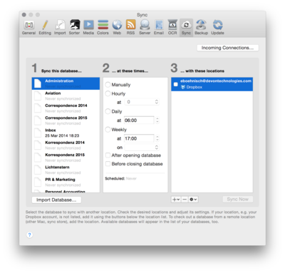
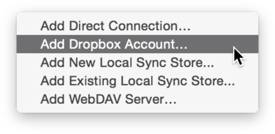
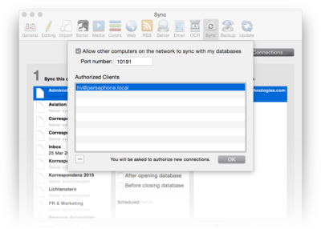
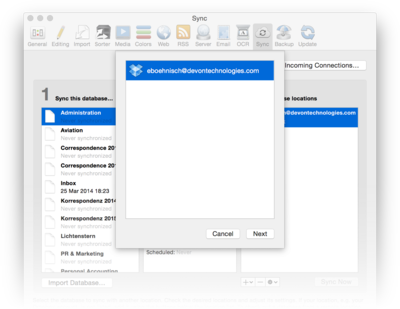

|
|
|
Sync |
|
 DEVONthink Pro Office allows you to keep multiple copies of your databases on multiple Macs in sync. Use these options to define which locations are synced when. Click here to learn more about synchronization and how to set it up. Databases The first column lists all open databases and includes information about when a database was last synchronized with any location. When you select a database, the next two columns will show when and with which locations the database will be synchronized. Schedule The second column at which times you want to synchronize the selected database. You can choose to synchronize it:
For Hourly select the minute of the hour, for Daily the time, and for Weekly the time and the day of the week, all Weekdays or the Weekends. Below the options, DEVONthink Pro Office shows you when the database will be next synchronized according to the chosen schedule. Locations  The third column lists all locations you have defined. Check all locations that you want to synchronize the selected database with. To add new locations, click the + button below the list and choose the desired location type from the pop-up menu. Remove a location by selecting it and clicking the - button. Use the gear button to modify an already added location or to clear an existing location (remove all data in the location). Click the Sync or Sync Now button to begin synchronizing the database. Incoming Connections Click the button Incoming Connections to define whether other DEVONthink users on your network can synchronize with your instance of DEVONthink Pro Office. In the dialog sheet that appears, check Allow other computers on the network to sync with my databases to allow other users access. Enter a port number on which DEVONthink Pro Office listens for incoming connections. If the suggested port number is already in use, you can choose any other port number. (Contact your system administrator if you're unsure.)  The list of authorized clients lists all computers that have synchronized with your instance of DEVONthink Pro Office before. If another user wants to connect to your machine, DEVONthink Pro Office will generate a random PIN on your screen that the user has to enter on his/her screen. This ensures that only persons authorized by you can synchronize with your databases. Select a listed client and click the - button to withdraw the authorization. Import Database  Use the Import Database button to retrieve a database from a location. Make sure to add the location that contains the database in question. Then click this button, choose the location in the sheet that appears, and click Next. Select the database you want to import and click Import. |